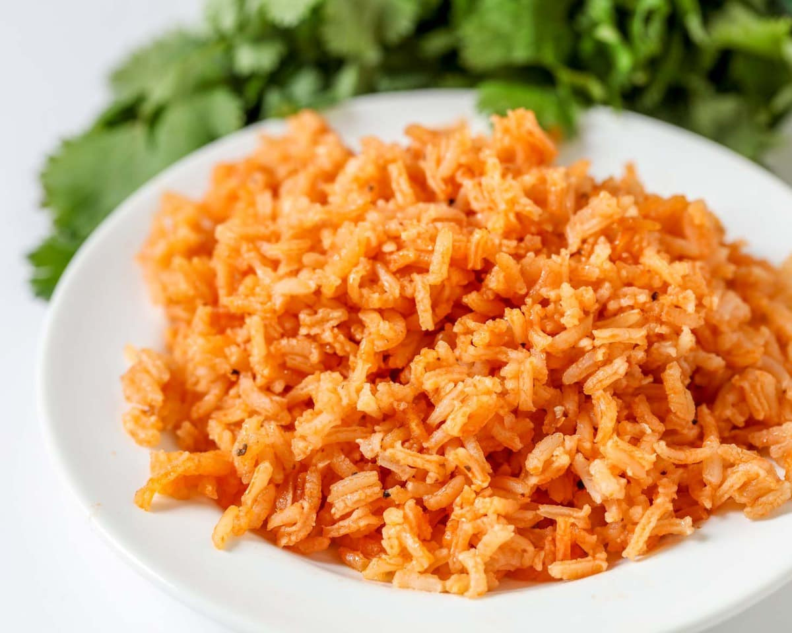

Spanish Rice Recipe

I love making this dish, it has a subtle saffron flavor and it reminds me of paella, but seriously
easy to make. All you need is a few ingredients and a rice cooker.
- Prep:5 mins
- Cook:25 mins
- Total:30 mins
- Serves:4
Ingredients
- 2 cups white rice, jasmine or long grain
- 4 cups chicken stock or mix in bouillon
- 1 tbsp. achiote paste
- 20 threads of saffron
- 1 tbsp. Olive oil
Directions
- First you need to wash your rice, rinse it out until there is no more white stuff coming out
- Then you combine all your ingredients in a rice cooker and stir it until thoroughly mixed
- Cook the rice and once it is done fluff your rice up in the rice cooker and let sit for 5 minutes
- Finally enjoy your rice, Bon Apetite